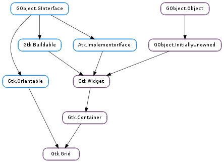

| static | new() |
| attach(child, left, top, width, height) | |
| attach_next_to(child, sibling, side, width, height) | |
| get_baseline_row() | |
| get_child_at(left, top) | |
| get_column_homogeneous() | |
| get_column_spacing() | |
| get_row_baseline_position(row) | |
| get_row_homogeneous() | |
| get_row_spacing() | |
| insert_column(position) | |
| insert_next_to(sibling, side) | |
| insert_row(position) | |
| remove_column(position) | |
| remove_row(position) | |
| set_baseline_row(row) | |
| set_column_homogeneous(homogeneous) | |
| set_column_spacing(spacing) | |
| set_row_baseline_position(row, pos) | |
| set_row_homogeneous(homogeneous) | |
| set_row_spacing(spacing) |
| Name | Type | Flags | Description |
|---|---|---|---|
| baseline-row | int | r/w | The row to align the to the baseline when valign is Gtk.Align.BASELINE |
| column-homogeneous | bool | r/w | If True, the columns are all the same width |
| column-spacing | int | r/w | The amount of space between two consecutive columns |
| row-homogeneous | bool | r/w | If True, the rows are all the same height |
| row-spacing | int | r/w | The amount of space between two consecutive rows |
None
| Name | Type | Access |
|---|---|---|
| container | Gtk.Container | r |
Bases: Gtk.Container, Gtk.Orientable
Gtk.Grid is a container which arranges its child widgets in rows and columns. It is a very similar to Gtk.Table and Gtk.Box, but it consistently uses Gtk.Widget ‘s Gtk.Widget :margin and Gtk.Widget :expand properties instead of custom child properties, and it fully supports height-for-width geometry management.
Children are added using Gtk.Grid.attach (). They can span multiple rows or columns. It is also possible to add a child next to an existing child, using Gtk.Grid.attach_next_to (). The behaviour of Gtk.Grid when several children occupy the same grid cell is undefined.
Gtk.Grid can be used like a Gtk.Box by just using Gtk.Container.add (), which will place children next to each other in the direction determined by the Gtk.Orientable :orientation property.
| Returns: | the new Gtk.Grid |
|---|---|
| Return type: | Gtk.Widget |
Creates a new grid widget.
| Parameters: |
|
|---|
Adds a widget to the grid.
The position of child is determined by left and top. The number of ‘cells’ that child will occupy is determined by width and height.
| Parameters: |
|
|---|
Adds a widget to the grid.
The widget is placed next to sibling, on the side determined by side. When sibling is None, the widget is placed in row (for left or right placement) or column 0 (for top or bottom placement), at the end indicated by side.
Attaching widgets labeled [1], [2], [3] with sibling == None and side == Gtk.PositionType.LEFT yields a layout of [3][2][1].
| Returns: | the row index defining the global baseline |
|---|---|
| Return type: | int |
Returns which row defines the global baseline of grid.
| Parameters: | |
|---|---|
| Returns: | the child at the given position, or None |
| Return type: |
Gets the child of grid whose area covers the grid cell whose upper left corner is at left, top.
| Returns: | whether all columns of grid have the same width. |
|---|---|
| Return type: | bool |
Returns whether all columns of grid have the same width.
| Returns: | the column spacing of grid |
|---|---|
| Return type: | int |
Returns the amount of space between the columns of grid.
| Parameters: | row (int) – a row index |
|---|---|
| Returns: | the baseline position of row |
| Return type: | Gtk.BaselinePosition |
Returns the baseline position of row as set by Gtk.Grid.set_row_baseline_position () or the default value Gtk.BaselinePosition.CENTER.
| Returns: | whether all rows of grid have the same height. |
|---|---|
| Return type: | bool |
Returns whether all rows of grid have the same height.
| Returns: | the row spacing of grid |
|---|---|
| Return type: | int |
Returns the amount of space between the rows of grid.
| Parameters: | position (int) – the position to insert the column at |
|---|
Inserts a column at the specified position.
Children which are attached at or to the right of this position are moved one column to the right. Children which span across this position are grown to span the new column.
| Parameters: |
|
|---|
Inserts a row or column at the specified position.
The new row or column is placed next to sibling, on the side determined by side. If side is Gtk.PositionType.TOP or Gtk.PositionType.BOTTOM, a row is inserted. If side is Gtk.PositionType.LEFT of Gtk.PositionType.RIGHT, a column is inserted.
| Parameters: | position (int) – the position to insert the row at |
|---|
Inserts a row at the specified position.
Children which are attached at or below this position are moved one row down. Children which span across this position are grown to span the new row.
| Parameters: | position (int) – the position of the column to remove |
|---|
Removes a column from the grid.
Children that are placed in this column are removed, spanning children that overlap this column have their width reduced by one, and children after the column are moved to the left.
| Parameters: | position (int) – the position of the row to remove |
|---|
Removes a row from the grid.
Children that are placed in this row are removed, spanning children that overlap this row have their height reduced by one, and children below the row are moved up.
| Parameters: | row (int) – the row index |
|---|---|
| Returns: | the row index defining the global baseline |
Sets which row defines the global baseline for the entire grid. Each row in the grid can have its own local baseline, but only one of those is global, meaning it will be the baseline in the parent of the grid.
| Parameters: | homogeneous (bool) – True to make columns homogeneous |
|---|
Sets whether all columns of grid will have the same width.
| Parameters: | spacing (int) – the amount of space to insert between columns |
|---|
Sets the amount of space between columns of grid.
| Parameters: |
|
|---|
Sets how the baseline should be positioned on row of the grid, in case that row is assigned more space than is requested.